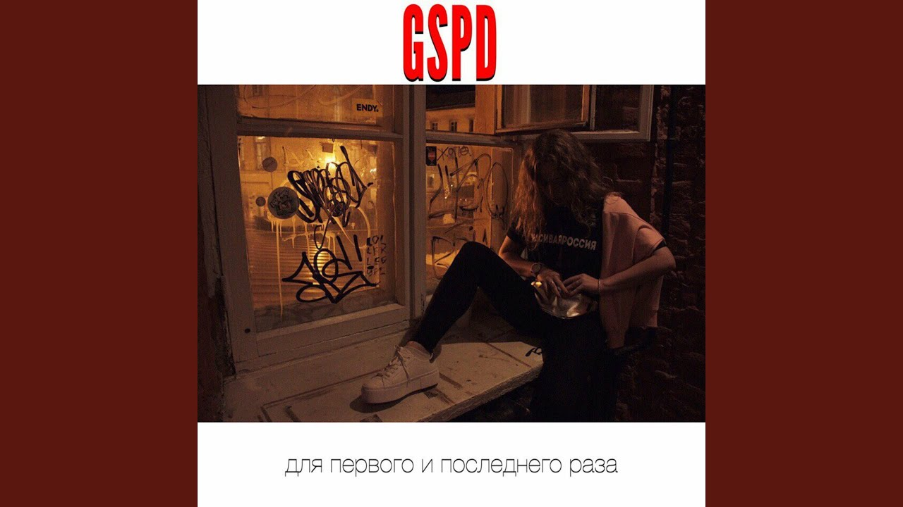

GSPD (Давид Деймур)
1984

Об исполнителе:
Давид Деймур (род. 10 августа 1993 года в Нижнем Тагиле) — российский музыкант, продюсер и основатель танцевального электронного проекта GSPD. GSPD — название музыкального проекта Давида Деймура — артиста и саундпродюсера из Санкт-Петербурга. В проекте участвует Арина Буланова (Dead Blonde), которой принадлежит женский голос в песнях GSPD и которая является диджеем на концертах
📝 Текст песни:
Я везу тебя в лесополосу
И хочу там расчленить
Я везу тебя в лесополосу
И хочу до полусмерти избить
Будут отдельно руки твои
И отдельно твоя голова
Будут отдельно ноги твои
И отдельно твоя пизда
Всё потому что я один из тех немногих
Кому ты не сказала слово «да»
Пустим по кругу подругу твою
И неважно, сколько ей лет
Пустим, допустим, сначала её,
А быть может, её уже нет
Ты будешь кричать как сучка
Так немодно будешь хрипеть
Ты будешь бежать, и сучья
Под тобою будут хрустеть
Всё потому что я один из тех немногих
Кому ты не сказала слово «да»
Едешь в машине и смотришь в окно
Этой ночью в последний раз
Едешь и плачешь, что мать твоя — блядь
И что отчим твой — пидарас
Вот будет искать тебя мамка твоя
Будет бегать по темным лесам
Опознавать кучу трупов
И сверять что-то по волосам
Всё потому что я один из тех немногих
Кому ты не сказала слово «да»
Не сказала слово «да»
Не сказала слово «да»
Если ты скажешь мне «да»
То навсегда будет твоим белый свет
Если ты скажешь мне «нет»
То мой ответ будет «прощай навсегда»
Если ты скажешь мне «да»
То навсегда будет твоим белый свет
Если ты скажешь мне «нет»
То мой ответ будет «прощай навсегда»